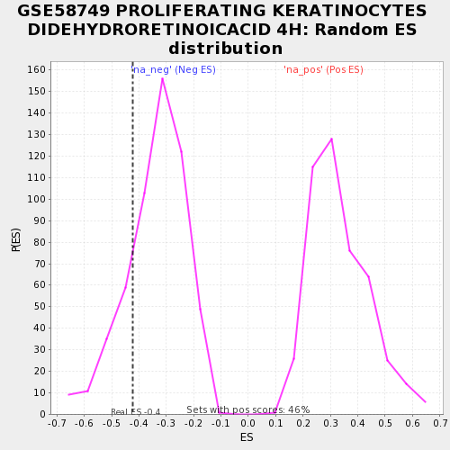

| | | Dataset | testA |
| Phenotype | NoPhenotypeAvailable |
| Upregulated in class | na_neg |
| GeneSet | GSE58749 PROLIFERATING KERATINOCYTES DIDEHYDRORETINOICACID 4H |
| Enrichment Score (ES) | -0.42384765 |
| Normalized Enrichment Score (NES) | -1.2545816 |
| Nominal p-value | 0.2 |
| FDR q-value | 1.0 |
| FWER p-Value | 1.0 |
Table: GSEA Results Summary
 Fig 1: Enrichment plot: GSE58749 PROLIFERATING KERATINOCYTES DIDEHYDRORETINOICACID 4H
Fig 1: Enrichment plot: GSE58749 PROLIFERATING KERATINOCYTES DIDEHYDRORETINOICACID 4H
Profile of the Running ES Score & Positions of GeneSet Members on the Rank Ordered List
| PROBE | GENE SYMBOL | GENE_TITLE | RANK IN GENE LIST | RANK METRIC SCORE | RUNNING ES | CORE ENRICHMENT | | 1 | TTC9 | | | 20 | 0.768 | -0.0004 | No |
| 2 | ANKRD28 | | | 53 | 0.454 | -0.1317 | No |
| 3 | LMCD1 | | | 62 | -0.444 | -0.1088 | No |
| 4 | P2RY2 | | | 98 | -0.608 | -0.2336 | No |
| 5 | EME2 | | | 116 | -0.682 | -0.2290 | No |
| 6 | FOS | | | 147 | -0.917 | -0.2693 | Yes |
| 7 | ARRDC4 | | | 149 | -1.023 | -0.1034 | Yes |
| 8 | RHOB | | | 152 | -1.037 | 0.0584 | Yes |
Table: GSEA details [plain text format]

Fig 2: GSE58749 PROLIFERATING KERATINOCYTES DIDEHYDRORETINOICACID 4H: Random ES distribution
Gene set null distribution of ES for GSE58749 PROLIFERATING KERATINOCYTES DIDEHYDRORETINOICACID 4H